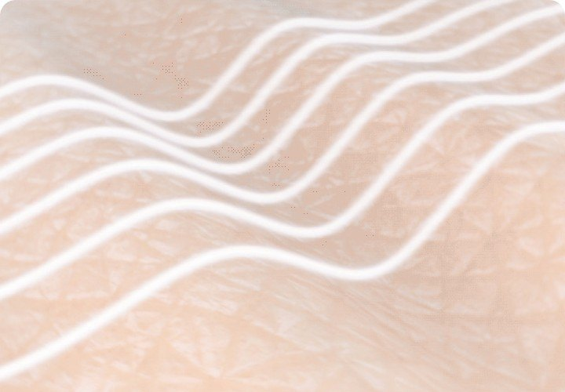

01. 초기 노화형 · Early Aging Type
“빛의 변화가 얼굴에 살포시 드리우기 시작할 때”
아직 깊은 주름이나 뚜렷한 처짐은 크지 않지만, 피부톤이 예전보다 칙칙해지고 기미·잡티가 눈에 띄며 피부의 맑음과 광채가 감소하기 시작하는 유형입니다.
대표 고민피부톤 저하 · 기미 · 잡티 · 칙칙함 · 광채 감소

HOME / AGING LAB / 6가지 노화 타입
6가지 노화 타입
같은 나이라고 해서 같은 모습으로 나이 들지는 않습니다.
어떤 사람은 눈밑의 변화가 먼저 느껴지고,
어떤 사람은 눈가와 입가의 잔주름이 먼저 늘어납니다.
또 어떤 사람은 볼과 턱선의 변화가 먼저 나타나고,
누군가는 주름이나 처짐보다 피부톤과 광채의 변화에서 먼저 나이를 느낍니다.
careCL은 노화 관리를 시작하기 전에 먼저 한 가지 질문에 답해야 한다고 생각합니다.
“나는 어떤 방식으로 나이 들고 있는가?”
이를 이해하기 위해 careCL은 기존의 노화 형태학적 분류, Aging Morphotypes를 바탕으로 한국인과 동아시아인의 피부 특성, 그리고 실제 고객들이 느끼는 노화 고민을 함께 살펴보았습니다.
그 결과 노화가 나타나는 주요 패턴을 careCL 6 Aging Types로 정의했습니다.
6 Aging Types는 단순히 현재 피부 상태를 나누기 위한 분류가 아닙니다.
내 얼굴에서 어떤 변화가 먼저 나타나고 있는지 이해하고,
어디를 먼저 관리해야 하는지를 찾기 위한 첫 번째 기준입니다.
얼굴의 노화는 단순히 시간이 지나면서 주름이 늘어나는 과정이 아닙니다.
피부의 특성, 피하지방의 양과 분포, 얼굴 근육의 발달과 움직임, 골격 구조, 자외선과 생활 습관 등 다양한 요인이 서로 다르게 작용하면서 사람마다 다른 노화의 모습을 만들어냅니다.
그래서 같은 나이의 두 사람도 전혀 다른 변화를 경험할 수 있습니다.
한 사람은 눈밑이 먼저 꺼지고 피곤한 인상이 나타나는 반면, 다른 사람은 눈가에 잔주름이 늘어날 수 있습니다. 또 다른 사람은 얼굴의 주름보다 볼과 턱선의 변화가 먼저 눈에 띌 수 있습니다.
careCL은 여기서 한 단계 더 주목했습니다.
한국인과 동아시아인의 경우 깊은 주름이나 뚜렷한 처짐에 앞서 피부톤 저하, 색소 변화, 광채 감소와 같은 피부 컨디션의 변화를 노화의 시작으로 느끼는 경우도 많습니다.
그래서 기존의 Aging Morphotypes를 그대로 적용하는 것이 아니라, 이러한 초기 변화를 별도의 패턴으로 포함해 6가지 노화 유형으로 확장했습니다.
“빛의 변화가 얼굴에 살포시 드리우기 시작할 때”
아직 깊은 주름이나 뚜렷한 처짐은 크지 않지만, 피부톤이 예전보다 칙칙해지고 기미·잡티가 눈에 띄며 피부의 맑음과 광채가 감소하기 시작하는 유형입니다.
대표 고민피부톤 저하 · 기미 · 잡티 · 칙칙함 · 광채 감소
“세월의 그림자가 눈가에 깃들어 갈 때”
주름보다 먼저 얼굴의 생기와 활력이 줄어들며, 특히 눈밑을 중심으로 피곤하고 지쳐 보이는 인상이 나타나는 유형입니다.
대표 고민눈밑 변화 · 다크서클 · 안색 저하 · 생기 부족 · 입꼬리 변화
“연하지만 촘촘한 주름이 신경 쓰이기 시작할 때”
얼굴 윤곽의 변화보다 피부 표면의 잔주름이 먼저 두드러지는 유형입니다. 특히 눈가와 입가, 목처럼 피부가 얇거나 움직임이 많은 부위의 변화가 눈에 띄기 시작합니다.
대표 고민눈가 잔주름 · 입가 잔주름 · 건조함 · 얇아 보이는 피부
“세월과 중력이 빚어낸 얼굴 라인의 변화”
주름 자체보다 볼과 턱선 등 얼굴의 윤곽과 형태 변화가 먼저 느껴지는 유형입니다. 시간이 지나면서 중안면과 하안면의 변화가 보다 뚜렷하게 나타날 수 있습니다.
대표 고민볼 변화 · 팔자 · 턱선 · 이중턱 · 얼굴 윤곽 변화
“시간의 흐름이 표정에 깊은 흔적을 남기기 시작할 때”
얼굴 근육의 발달과 반복적인 표정 움직임의 영향을 많이 받는 유형입니다. 얼굴 윤곽은 비교적 유지되면서 이마, 미간, 눈가 등 표정을 많이 사용하는 부위의 선이 점차 뚜렷해집니다.
대표 고민이마 · 미간 · 눈가 · 표정 주름
“부위별로 노화 패턴이 다르게 나타나는 유형”
실제 많은 사람의 얼굴은 하나의 유형만으로 변화하지 않습니다.
예를 들어 눈가는 잔주름형의 특징을 보이면서, 볼과 턱에서는 변형·처짐형의 특징이 함께 나타날 수 있습니다.
혼합형은 얼굴의 부위마다 서로 다른 노화 패턴이 나타나는 유형입니다.

피부결, 탄력, 톤, 윤곽 — 먼저 나타나는 변화가 사람마다 다릅니다. 그래서 관리의 출발점도 달라야 합니다.
노화 유형을 아는 것은 시작입니다.
같은 피로형이라도 누군가는 눈밑의 변화가 더 크고, 같은 변형·처짐형이라도 누군가는 볼이, 다른 사람은 턱선이 먼저 신경 쓰일 수 있습니다.
그래서 careCL의 다음 질문은 이것입니다.
“내 노화는 어디에서 나타나고 있는가?”
careCL은 얼굴과 목, 바디에서 노화 관리가 필요한 포인트를 22개의 좌표로 세분화한 AGING MAP 22를 만들었습니다.
6 AGING TYPES가 ‘어떤 방식으로 나이 들고 있는가’를 이해하는 기준이라면,
AGING MAP 22는 ‘어디를 관리해야 하는가’를 찾는 지도입니다.